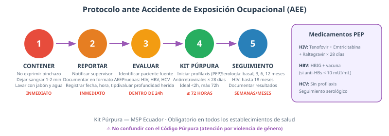
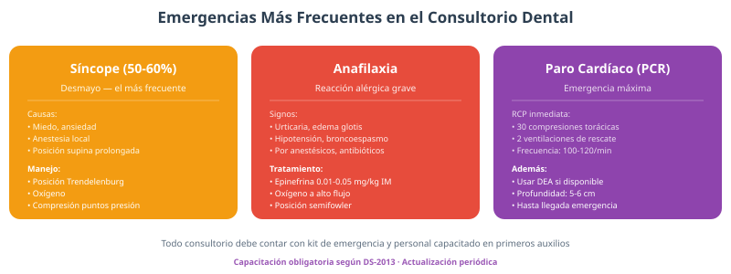
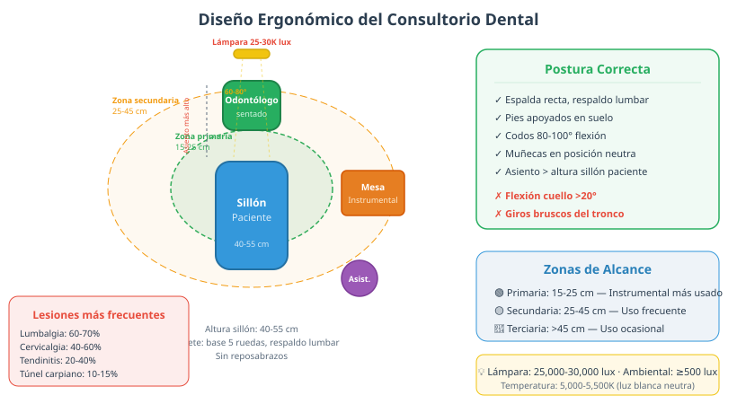
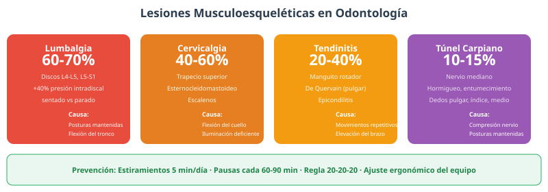

Salud Ocupacional y Ergonomía Odontológica
Introducción a la Salud Ocupacional
▼En odontología, la salud ocupacional adquiere especial relevancia porque los profesionales están expuestos simultáneamente a riesgos biológicos (sangre, saliva, aerosoles), químicos (amalgama, formaldehído), físicos (radiaciones, ruido), ergonómicos (posturas mantenidas) y psicosociales (estrés, burnout). Esta combinación única de factores hace que la prevención sea un componente fundamental de la práctica odontológica.
Marco legal en Ecuador
- Constitución de la República (2008): Art. 328 — derecho al trabajo en condiciones dignas, justas y adecuadas, en un ambiente sano y seguro. Este artículo eleva la seguridad laboral a categoría de derecho fundamental.
- Ley Orgánica de Seguridad y Salud en el Trabajo: Establece las obligaciones del empleador (proporcionar EPP, capacitar, investigar accidentes) y los derechos del trabajador (capacitación continua, protección, atención inmediata ante accidentes).
- DS-2013 (Reglamento de SST): Instrumento normativo más específico. Obliga a: evaluación de riesgos (periódica y documentada), plan de prevención, capacitación continua, investigación de accidentes e incidentes, comités de SST, vigilancia médica y registros de seguridad.
- Acuerdos Ministeriales del MSP: Protocolos de bioseguridad, reglamento de residuos, Kit Púrpura y normas técnicas específicas para establecimientos de salud.
Cinco grupos de riesgo en odontología
- Riesgo biológico: La categoría más conocida. Incluye exposición a sangre, saliva, aerosoles intraorales y fluidos corporales. Los agentes más relevantes son HBV (riesgo de transmisión por pinchazo del 6-30% sin vacuna), HCV (1.8%, sin vacuna), HIV (0.3%), virus del Herpes Simple y Mycobacterium tuberculosis. Los aerosoles del turbine dental alcanzan 2 metros y permanecen suspendidos hasta 60 minutos.
- Riesgo químico: La amalgama dental contiene mercurio como componente principal; los vapores de mercurio son neurotóxicos y se acumulan en el organismo. El formaldehído, presente en fijadores y formocresol, es cancerígeno. Otros químicos incluyen solventes orgánicos (cloroformo, xileno), ácidos grabadores (ácido fosfórico al 37%), resinas compuestas y monómeros de metil metacrilato.
- Riesgo físico: Radiaciones ionizantes de rayos X intraorales y panorámicas (requieren delantal de plomo y collar tiroideo), ruido del turbine dental (superior a 80 decibelios, por encima del límite seguro de 85 dB/8h según OSHA), vibración de piezas de mano (puede causar síndrome de Raynaud), pinchazos con agujas (80% de accidentes de exposición) y descargas eléctricas.
- Riesgo ergonómico: Posturas estáticas mantenidas durante procedimientos de larga duración, movimientos repetitivos de la muñeca y los dedos (especialmente en endodoncia y operatoria), alcances forzados fuera de la zona óptima de trabajo, vibración de cuerpo entero y falta de pausas activas.
- Riesgo psicosocial: Estrés laboral por exceso de demandas de trabajo, síndrome de desgaste profesional (burnout), conflictos interpersonales con pacientes o compañeros, violencia laboral (agresiones físicas o verbales), sobrecarga cognitiva en procedimientos de alta precisión y conflicto trabajo-familia por horarios prolongados.
Evaluación de riesgos y su impacto en la salud del personal
La evaluación de riesgos es un proceso sistemático que permite identificar los peligros, estimar la magnitud del riesgo y establecer prioridades de intervención. En odontología, esta evaluación debe ser periódica y documentada, según lo establece el DS-2013.
- Método de evaluación: Se utiliza la fórmula Riesgo = Probabilidad × Consecuencia. La probabilidad evalúa la frecuencia de exposición y la cantidad de agentes involucrados. La consecuencia evalúa la severidad del daño a la salud.
- Escala de probabilidad (1-5): 1 = Muy improbable (exposición ocasional), 2 = Improbable, 3 = Posible (exposición periódica), 4 = Probable (exposición frecuente), 5 = Muy probable (exposición diaria).
- Escala de consecuencia (1-5): 1 = Sin efecto, 2 = Leve (molestia temporal), 3 = Moderada (lesión reversible), 4 = Grave (lesión irreversible), 5 = Muy grave (muerte o incapacidad permanente).
- Nivel de riesgo: Bajo (1-4), Medio (5-9), Alto (10-15), Muy alto (16-25). Los riesgos altos y muy altos requieren acción inmediata.
El impacto en la salud del personal odontológico se manifiesta a través de múltiples vías:
- Impacto físico: Enfermedades infecciosas adquiridas ocupacionalmente, lesiones musculoesqueléticas, pérdida auditiva por ruido, dermatitis por sustancias químicas.
- Impacto psicológico: Estrés crónico, ansiedad ante exposiciones, temor a contagio, burnout.
- Impacto económico: Días de incapacidad, costos de tratamiento post-exposición, primas de seguros.
- Impacto laboral: Reducción de productividad, absentismo, rotación de personal.
La documentación de la evaluación de riesgos debe incluir: identificación del peligro, valoración del riesgo, medidas de control propuestas, responsable de implementación y fecha de revisión. Este registro es obligatorio según el DS-2013 y debe estar disponible para inspección.
Prevención de Riesgos
▼Protocolo ante Accidentes de Exposición Ocupacional (AEE)

Cuando ocurre un AEE (pinchazo, salpicadura en mucosas o contacto con piel lesionada), se debe seguir este protocolo de atención inmediata:
- Contener: En caso de pinchazo, no exprimir la herida porque puede aumentar la cantidad de sangre contaminada que ingresa al organismo. Dejar sangrar libremente durante 1-2 minutos para que la sangre arrastre los microorganismos hacia el exterior. Lavar con abundante agua y jabón. Si la exposición fue en mucosas oculares, irrigar con solución salina estéril durante al menos 15 minutos.
- Reportar: Notificar inmediatamente al supervisor responsable. Documentar en el formato oficial de reporte de AEE, registrando: fecha, hora, tipo de exposición (pinchazo, salpicadura, contacto con mucosa), fuente (paciente conocido o desconocido), vía de transmisión y medidas inmediatas tomadas.
- Evaluar: Identificar al paciente fuente (si es posible) y solicitar su consentimiento para pruebas serológicas de HIV, HBV y HCV. Evaluar la profundidad de la herida y el volumen de exposición.
- Kit Púrpura (PEP): Iniciar profilaxis post-exposición dentro de las primeras 72 horas, idealmente en las primeras 2 horas. La eficacia disminuye significativamente después de 72 horas.
- Seguimiento: Serología basal (inmediata), y controles a los 3, 6 y 12 meses. Para HIV, seguimiento hasta 18 meses.
Kit Púrpura — Medicamentos profilácticos
- Para HIV: Tenofovir (300 mg/día) + Emtricitabina (200 mg/día) + Raltegravir (400 mg cada 12 horas) durante 28 días. La adherencia al tratamiento es crucial.
- Para Hepatitis B: Si el trabajador no tiene anticuerpos protectores (anti-HBs < 10 mUI/mL), se administra Inmunoglobulina Anti-Hepatitis B (HBIG) y se inicia o refuerza el esquema de vacunación.
- Para Hepatitis C: No existe profilaxis disponible. El manejo se limita al seguimiento serológico a los 3, 6 y 12 meses.
Vacunación del personal odontológico
- Hepatitis B (OBLIGATORIA): Esquema de 3 dosis (0, 1 y 6 meses) con vacuna recombinante de antígeno de superficie (HBsAg). Después del esquema, se debe verificar la seroconversión: anti-HBs ≥ 10 mUI/mL. El riesgo de contagio por pinchazo con sangre HBV+ sin vacuna es del 6-30%.
- Influenza: Vacuna anual, preferiblemente antes de la temporada de invierno (marzo-abril en Ecuador).
- Tétanos-difteria (Td): Refuerzo cada 10 años.
- Otras según riesgo: Sarampión, rubéola, varicela, COVID-19.
Emergencias médicas en el consultorio dental

- Síncope (50-60% de emergencias): Desmayo causado por miedo, ansiedad, anestesia local o posición supina prolongada. Manejo: posición de Trendelenburg (decúbito supino con piernas elevadas 15-30°), oxígeno, compresión firme en puntos de presión (esternón, ángulo de la mandíbula), monitoreo de signos vitales.
- Reacción anafiláctica: Emergencia potencialmente mortal por anestésicos locales, antibióticos u otros medicamentos. Signos: urticaria, edema de glotis, hipotensión, broncoespasmo. Tratamiento: epinefrina (adrenalina) 0.01-0.05 mg/kg IM en tercio medio del muslo, repetir cada 5-15 min. Solicitar ayuda de emergencia, oxígeno a alto flujo, posición semifowler.
- Paro cardiorrespiratorio (PCR): Secuencia de RCP: 30 compresiones torácicas (100-120/min, profundidad 5-6 cm) intercaladas con 2 ventilaciones de rescate. Usar DEA (Desfibrilador Externo Automático) si está disponible. Mantener hasta llegada del equipo de emergencia.
Ergonomía Odontológica
▼Cinco principios ergonómicos
- 1. Diseñar para las capacidades humanas: El puesto de trabajo debe adaptarse al trabajador, no al revés. Esto implica ajustar la altura del sillón, la posición del instrumental y la iluminación según las necesidades individuales.
- 2. Eliminar peligros en la fuente: Rediseñar herramientas y procesos para minimizar riesgos ergonómicos antes de que ocurran, en lugar de depender solo de la capacitación del trabajador.
- 3. Facilitar adaptación: Ajustes individuales del equipo según cada odontólogo (altura del taburete, ángulo de la lámpara, posición del instrumental).
- 4. Compensar límites: Uso de tecnología asistiva cuando la postura ideal no es alcanzable (microscopios, cámaras intraorales, sistemas de succión mejorados).
- 5. Soluciones prácticas: Cada intervención debe ser factible en el contexto específico del consultorio dental.
Diseño ergonómico del consultorio dental

- Sillón del paciente: Altura ajustable de 40 a 55 cm. Para maxilar inferior, posición baja (40-45 cm); para maxilar superior, posición alta (50-55 cm). Inclinación del respaldo: 15-30° para maxilar inferior.
- Taburete del odontólogo: Base de 5 ruedas para estabilidad y movilidad. Ajuste neumático de altura. Respaldo lumbar ajustable en altura y profundidad. Sin reposabrazos para facilitar el acercamiento al paciente. Posición: ligeramente por encima del nivel del sillón del paciente.
- Zonas de alcance: Zona primaria (15-25 cm): instrumental más utilizado (explorador, espejo, sonda). Zona secundaria (25-45 cm): instrumental de uso frecuente. Zona terciaria (>45 cm): uso ocasional.
- Iluminación: Lámpara operatoria: 25,000-30,000 lux en el punto de trabajo, temperatura de color 5,000-5,500K (luz blanca neutra). Iluminación ambiental: ≥500 lux. Ángulo de iluminación: 60-80° para evitar sombras.
Lesiones musculoesqueléticas más frecuentes

- Lumbalgia mecánica (60-70%): La más prevalente. Afecta los discos intervertebrales L4-L5 y L5-S1. La postura sentada genera presión intradiscal 40% mayor que la postura de pie, y la flexión del tronco incrementa esta presión en un 90%. Prevención: soporte lumbar, ajuste de altura del sillón, pausas cada 60-90 minutos.
- Cervicalgia (40-60%): Causada por la flexión lateral y anterior sostenida del cuello para visualizar el campo de trabajo, especialmente en molares posteriores. Músculos afectados: trapecio superior, esternocleidomastoideo, escalenos. Se agrava con iluminación deficiente.
- Tendinitis (20-40%): Tendinitis del manguito rotador (elevación del brazo) y tendinitis de De Quervain (pulgar, por movimientos de presión-giro). Frecuente en odontólogos que realizan muchas restauraciones y endodoncias.
- Síndrome del túnel carpiano (10-15%): Compresión del nervio mediano en el canal carpiano de la muñeca. Se manifiesta con hormigueo, entumecimiento y dolor en dedos pulgar, índice y medio. Puede ser incapacitante si no se trata.
Protocolo de estiramientos pre-clínica (5 minutos)
- Rotación de cuello: 10 rotaciones lentas por lado. Relaja los músculos cervicales y mejora la movilidad.
- Inclinación lateral del cuello: Mantener 15 segundos por lado. Estira el trapecio superior.
- Elevación de hombros: 10 repeticiones. Eleva los hombros hacia las orejas y suelta. Libera tensión en trapecios.
- Rotación de hombros: 10 hacia adelante y 10 hacia atrás. Moviliza la articulación glenohumeral.
- Extensión de muñecas: Mantener 15 segundos por lado. Estira flexores y extensores del antebrazo.
- Apertura y cierre de manos: 10 repeticiones. Abre y cierra los puños vigorosamente. Mejora la circulación en las extremidades superiores.
- Rotación de tronco: 10 repeticiones por lado. Moviliza la columna vertebral y alivia la tensión lumbar.
Herramientas y accesorios ergonómicos
- Microscopio dental: Permite trabajar sin inclinar excesivamente el cuello, manteniendo una postura ergonómica. Reduce la fatiga visual y mejora la precisión en procedimientos de endodoncia y operatoria.
- Cámara intraoral: Proyecta la imagen del campo de trabajo en un monitor, evitando que el odontólogo deba inclinarse para visualizar directamente. Reduce la flexión del cuello en un 60-80%.
- Sistemas de succión de alta eficiencia: Reducen la necesidad de aspiración manual y mantienen el campo de trabajo limpio sin esfuerzo adicional del operador.
- Instrumental ergonómico: Mangos con mayor diámetro (para reducir la fuerza de prensión), superficies antideslizantes, diseño que minimiza la desviación cubital de la muñeca.
- Aspiradores de mano improved: Diseñados con agarre neutral para reducir la carga sobre los músculos del antebrazo.
- Soportes para pies: Reposapiés ajustables que mantienen los muslos paralelos al suelo y reducen la presión lumbar.
Entrenamiento, concienciación e investigación en ergonomía
- Programas de capacitación: Talleres prácticos sobre posturas correctas, uso de herramientas ergonómicas, técnicas de estiramiento. Deben realizarse al inicio de la formación y refrescarse periódicamente.
- Evaluación y mejora continua: Aplicación periódica del cuestionario NORDIC y herramientas RULA/REBA para detectar cambios en la prevalencia de LMS. Los resultados deben revisarse en reuniones de equipo y traducirse en acciones correctivas.
- Casos de estudio: Análisis de casos de odontólogos que desarrollaron lesiones por malas prácticas ergonómicas, identificando los factores de riesgo y las intervenciones efectivas.
- Investigación y avances: La ergonomía odontológica es un campo en constante evolución. Los avances incluyen sillas con tecnología de memoria, sistemas de posicionamiento robótico, herramientas con retroalimentación de fuerza, y estudios epidemiológicos sobre la prevalencia de LMS en diferentes poblaciones de odontólogos.